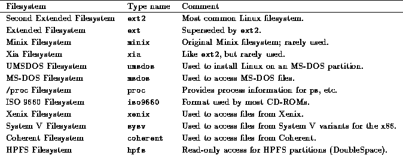

First, a few concepts about filesystems. Before a filesystem is accessible to the system, it must be mounted on some directory. For example, if you have a filesystem on a floppy, you must mount it under some directory, say /mnt, in order to access the files on it (see Section 4.6.2). After mounting the filesystem, all of the files in the filesystem appear in that directory. After unmounting the filesystem, the directory (in this case, /mnt) will be empty.
The same is true of filesystems on the hard drive. The system automatically mounts filesystems on your hard drive for you at bootup time. The so-called ``root filesystem'' is mounted on the directory /. If you have a separate filesystem for /usr, for example, it is mounted on /usr. If you only have a root filesystem, all files (including those in /usr) exist on that filesystem.
The command mount is used to mount a filesystem. The command
mount -av
is executed from the file /etc/rc (which is the system initialization file executed at boot time; see Section 4.10.1). The mount -av command obtains information on filesystems and mount points from the file /etc/fstab. An example fstab file appears below.
# device directory type options
/dev/hda2 / ext2 defaults
/dev/hda3 /usr ext2 defaults
/dev/hda4 none swap sw
/proc /proc proc none
The first field is the device---the name of the partition to mount. The
second field is the mount point. The third field is the filesystem
type---such as ext2 (for ext2fs) or minix (for Minix
filesystems). Table 4.1 lists the various filesystem
types available for Linux. Not all of these filesystem types may be
available on your system; your kernel must have support for them
compiled in. See Section 4.7 for information
on building the kernel.
Not all of these filesystem types may be
available on your system; your kernel must have support for them
compiled in. See Section 4.7 for information
on building the kernel.

Table 4.1: Linux Filesystem Types
The last field of the fstab file contains mount options---usually, this is set to ``defaults''.
As you can see, swap partitions are included in /etc/fstab as well. They have a mount directory of none, and type swap. The swapon -a command, executed from /etc/rc as well, is used to enable swapping on all swap devices listed in /etc/fstab.
The fstab file contains one special entry---for the /proc filesystem. As mentioned in Section 3.11.1, the /proc filesystem is used to store information about system processes, available memory, and so on. If /proc is not mounted, commands such as ps will not work.
 The mount command may only be used by root. This is
to ensure security on the system; you wouldn't want regular users mounting
and unmounting filesystems on a whim. There are several software packages
available which allow regular users to mount and unmount filesystems
(floppies in particular) without compromising system security.
The mount command may only be used by root. This is
to ensure security on the system; you wouldn't want regular users mounting
and unmounting filesystems on a whim. There are several software packages
available which allow regular users to mount and unmount filesystems
(floppies in particular) without compromising system security.
The mount -av command actually mounts all filesystems other than the root filesystem (in the table above, /dev/hda2). The root filesystem is automatically mounted at boot time by the kernel.
Instead of using mount -av, you can mount a filesystem by hand. The command
# mount -t ext2 /dev/hda3 /usr
is equivalent to mounting the filesystem with the entry /dev/hda3 in the fstab example file above.
In general, you should never have to mount or unmount filesystems by hand. The mount -av command in /etc/rc takes care of mounting the filesystems at boot time. Filesystems are automatically unmounted by the shutdown or halt commands before bringing the system down.